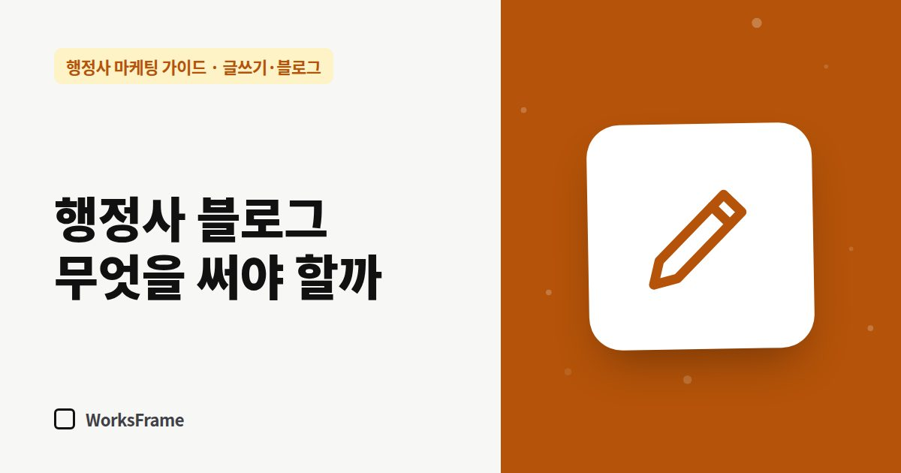

글쓰기·블로그
행정사 블로그, 무엇을 써야 문의가 올까 — 글 유형 5가지
한 줄 답
일상 글보다 고객 질문에 답하는 글이 문의로 이어집니다. 질문 답변, 준비서류 정리, 기한 안내, 거절·보완 대응, 진행 과정 설명. 이 다섯 가지를 쓰세요.

블로그를 시작하면 무엇을 써야 할지 막막합니다. 개업 소식, 사무실 사진, 시험 합격기는 읽는 재미는 있지만 고객이 검색하는 말이 아닙니다. 문의로 이어지는 글에는 공통점이 있습니다. 고객의 질문에 답한다는 것입니다.
문의로 이어지는 글 유형 5가지
| 유형 | 제목 예 | 왜 효과적인가 |
|---|---|---|
| 1. 질문 답변형 | “E-7-4 전환, 경력 몇 년이 필요한가요?” | 고객이 검색하는 문장 그대로 |
| 2. 준비서류 정리 | “공장등록 신청 준비서류 체크리스트” | 저장·공유가 많고, 막히면 연락 |
| 3. 기한·일정 안내 | “체류기간 만료 전 언제부터 연장 신청?” | 급한 고객이 찾음 |
| 4. 거절·보완 대응 | “보완 요청을 받았을 때 먼저 확인할 것” | 이미 문제가 생긴 고객 = 의뢰 가능성 높음 |
| 5. 처리 과정 설명 | “의뢰하면 이렇게 진행됩니다” | 연락하기 전 불안을 줄임 |
쓰기 전에 정할 세 가지
- 이 글을 검색할 사람은 누구인가 — 외국인 본인? 고용주? 공장 대표?
- 그 사람의 질문 한 문장 — 제목이 됩니다
- 읽고 나서 할 행동 — 서류를 준비한다, 상담을 신청한다
문의로 이어지게 하는 장치
- 글 끝에 “이런 경우는 상담이 필요합니다” 목록 — 예외 상황 몇 가지
- 연락 방법 한 줄 (전화·카톡·홈페이지)
- 관련 업무 안내 페이지 링크
쓰지 않는 게 나은 글
자주 묻는 질문
일상 글은 아예 쓰지 말아야 하나요?
가끔은 괜찮습니다. 사람 냄새가 신뢰를 줍니다. 다만 비율은 업무 글이 훨씬 많아야 합니다.
글감이 금방 떨어지지 않을까요?
상담에서 받은 질문을 기록하면 떨어지지 않습니다. 방법은 상담 질문으로 글감 만들기에 정리했습니다.